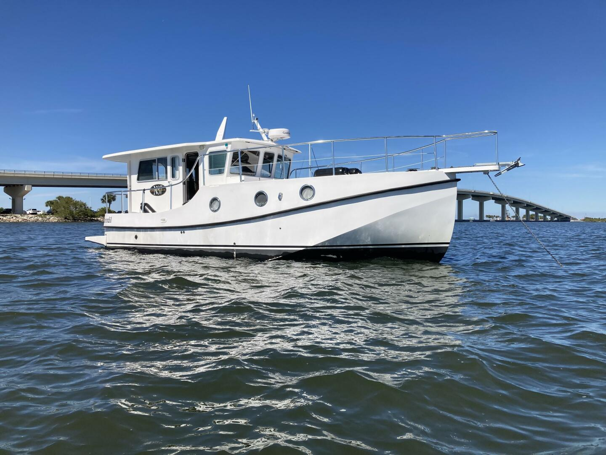

B-Scout Boat Guide · GRTH-N37
Great Harbour N37 Navigator / Long-Range Trawler
2001–2015
The Great Harbour N37 is a very wide, shallow-draft full-displacement trawler from Mirage Manufacturing. It uses twin small diesels, exceptional interior volume and large tankage to prioritize liveaboard comfort, low-speed economy and shallow-water access over conventional trawler proportions or speed.

- Length
- 36.83 ft
- Beam
- 15.83 ft
- Draft
- 2.83 ft
- Hull behaviour
- Displacement
- Fuel
- Diesel
- Propulsion
- Shaft
- Engine configuration
- Twin 54 hp Yanmar diesels
- Boat family
- Trawler
- Construction
- Fiberglass
Best for
- Liveaboard couples prioritizing space and shallow draft
- Great Loop, Bahamas and long-duration low-speed cruising
- Owners who value twin-engine redundancy more than speed
Trade-offs
- 15 ft 10 in beam creates major slip, lock and haul-out constraints
- 48,000 lb displacement is exceptionally high for a 37-foot nominal length
- Cruising speed is firmly displacement-speed and the unconventional hull form is mission-specific
Known concerns
- No model-specific concern has been promoted to B-Scout’s evidence threshold. This does not mean the model has no age-, condition- or hull-specific risks.
Inspection focus
- Confirm GH37 versus N37 layout and optional flybridge configuration
- Inspect integral fiberglass tanks and all fuel/water plumbing
- Inspect twin-engine cooling, exhaust, shafts, rudders and steering
- Inspect cored superstructure/deck penetrations and windows
- Verify electrical service, inverter/generator and household-appliance installations
Continue researching
Related boat models
Great Harbour GH37 Raised-Pilothouse Liveaboard Trawler
36.83 ft · Displacement
Grand Banks 36 Classic
36.83 ft · Semi-Displacement
Grand Banks 36 Europa
36.83 ft · Semi-Displacement
Back Cove 32 Downeast Cruiser
37 ft · Semi-Displacement
Beneteau Swift Trawler 35 Flybridge
37 ft · Semi-Displacement
Atlantic 37 Double Cabin Double Cabin Trawler
36.58 ft · Semi-Displacement
About this record
B-Scout preserves uncertainty: missing information remains unknown rather than being treated as a negative. Specifications and guidance describe the model record; individual boats can differ by year, equipment, refit and condition.